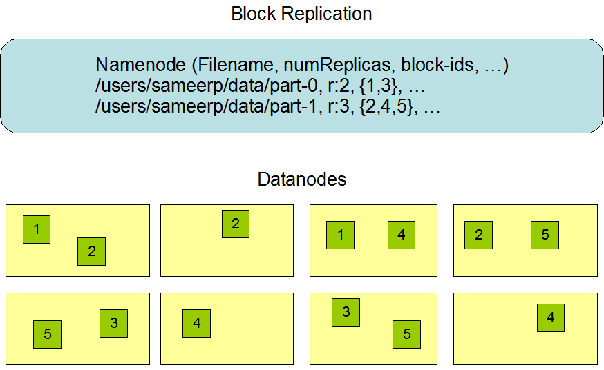
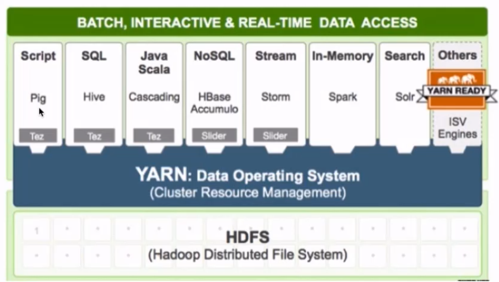
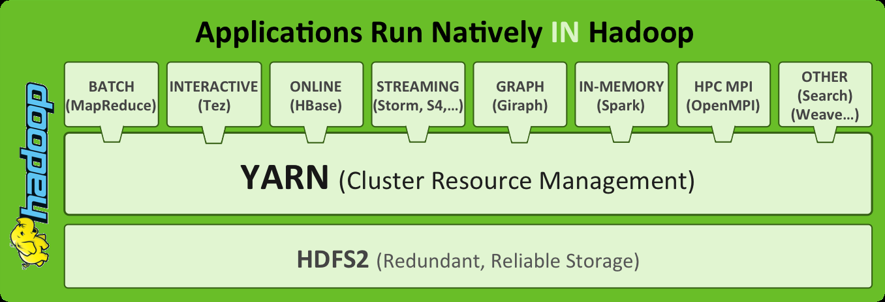
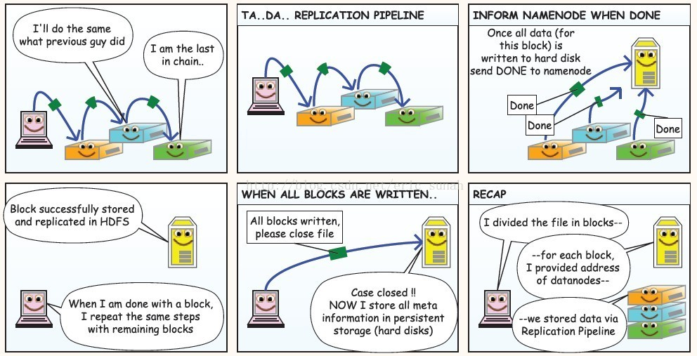

Hadoop
推荐系统学习笔记目录
Hadoop
什么是Hadoop
Hadoop名字的由来
- 作者：Doug cutting
- Hadoop项目作者的孩子给一个棕黄色的大象样子的填充玩具的命名

Hadoop的概念:
- Apache™ Hadoop® 是一个开源的, 可靠的(reliable), 可扩展的(scalable)分布式计算框架
- 允许使用简单的编程模型跨计算机集群分布式处理大型数据集
- 可扩展: 从单个服务器扩展到数千台计算机，每台计算机都提供本地计算和存储
- 可靠的: 不依靠硬件来提供高可用性(high-availability)，而是在应用层检测和处理故障，从而在计算机集群之上提供高可用服务
- Apache™ Hadoop® 是一个开源的, 可靠的(reliable), 可扩展的(scalable)分布式计算框架
Hadoop能做什么?
- 搭建大型数据仓库
- PB级数据的存储 处理 分析 统计等业务
- 搜索引擎
- 日志分析
- 数据挖掘
- 商业智能(Business Intelligence，简称：BI)
商业智能通常被理解为将企业中现有的数据(订单、库存、交易账目、客户和供应商等数据)转化为知识，帮助企业做出明智的业务经营决策的工具。从技术层面上讲，是数据仓库、数据挖掘等技术的综合运用。
- Hadoop发展史
- 2003-2004年 Google发表了三篇论文
- GFS：Google的分布式文件系统Google File System
- MapReduce: Simplified Data Processing on Large Clusters
- BigTable：一个大型的分布式数据库
- 2006年2月Hadoop成为Apache的独立开源项目( Doug Cutting等人实现了DFS和MapReduce机制)。
- 2006年4月— 标准排序(10 GB每个节点)在188个节点上运行47.9个小时。
- 2008年4月— 赢得世界最快1TB数据排序在900个节点上用时209秒。
- 2008年— 淘宝开始投入研究基于Hadoop的系统–云梯。云梯总容量约9.3PB，共有1100台机器，每天处理18000道作业，扫描500TB数据。
- 2009年3月— Cloudera推出CDH（Cloudera’s Dsitribution Including Apache Hadoop）
- 2009年5月— Yahoo的团队使用Hadoop对1 TB的数据进行排序只花了62秒时间。
- 2009年7月— Hadoop Core项目更名为Hadoop Common;
- 2009年7月— MapReduce和Hadoop Distributed File System (HDFS)成为Hadoop项目的独立子项目。
- 2012年11月— Apache Hadoop 1.0 Available
- 2018年4月— Apache Hadoop 3.1 Available
- 搜索引擎时代
- 有保存大量网页的需求(单机 集群)
- 词频统计 word count PageRank
- 数据仓库时代
- FaceBook推出Hive
- 曾经进行数分析与统计时, 仅限于数据库,受数据量和计算能力的限制, 我们只能对最重要的数据进行统计和分析(决策数据,财务相关)
- Hive可以在Hadoop上运行SQL操作, 可以把运行日志, 应用采集数据,数据库数据放到一起分析
- 数据挖掘时代
- 啤酒尿不湿
- 关联分析
- 用户画像/物品画像
- 机器学习时代 广义大数据
- 大数据提高数据存储能力, 为机器学习提供燃料
- alpha go
- siri 小爱 天猫精灵
- 2003-2004年 Google发表了三篇论文
Hadoop核心组件
Hadoop是所有搜索引擎的共性问题的廉价解决方案
- 如何存储持续增长的海量网页: 单节点 V.S. 分布式存储
- 如何对持续增长的海量网页进行排序: 超算 V.S. 分布式计算
- HDFS 解决分布式存储问题
- MapReduce 解决分布式计算问题
Hadoop Common: The common utilities that support the other Hadoop modules.(hadoop的核心组件)
- Hadoop Distributed File System (HDFS™): A distributed file system that provides high-throughput access to application data.(分布式文件系统)
- 源自于Google的GFS论文, 论文发表于2003年10月
- HDFS是GFS的开源实现
- HDFS的特点:扩展性&容错性&海量数量存储
- 将文件切分成指定大小的数据块, 并在多台机器上保存多个副本
- 数据切分、多副本、容错等操作对用户是透明的
- 下面这张图是数据块多份复制存储的示意
- 图中对于文件 /users/sameerp/data/part-0，其复制备份数设置为2, 存储的BlockID分别为1、3。
- Block1的两个备份存储在DataNode0和DataNode2两个服务器上
- Block3的两个备份存储在DataNode4和DataNode6两个服务器上

Hadoop MapReduce: A YARN-based system for parallel processing of large data sets.
- 分布式计算框架
- 源于Google的MapReduce论文，论文发表于2004年12月
- MapReduce是GoogleMapReduce的开源实现
- MapReduce特点:扩展性&容错性&海量数据离线处理

Hadoop YARN: A framework for job scheduling and cluster resource management.(资源调度系统)
YARN: Yet Another Resource Negotiator
负责整个集群资源的管理和调度
YARN特点:扩展性&容错性&多框架资源统一调度

Hadoop优势
- 高可靠
- 数据存储: 数据块多副本
- 数据计算: 某个节点崩溃, 会自动重新调度作业计算
- 高扩展性
- 存储/计算资源不够时，可以横向的线性扩展机器
- 一个集群中可以包含数以千计的节点
- 集群可以使用廉价机器，成本低
- Hadoop生态系统成熟
分布式文件系统 HDFS
HDFS的使用
启动HDFS
- 来到$HADOOP_HOME/sbin目录下
- 执行start-dfs.sh
1
[hadoop@hadoop00 sbin]$ ./start-dfs.sh
- 可以看到 namenode和 datanode启动的日志信息
1
2
3
4
5Starting namenodes on [hadoop00]
hadoop00: starting namenode, logging to /home/hadoop/app/hadoop-2.6.0-cdh5.7.0/logs/hadoop-hadoop-namenode-hadoop00.out
localhost: starting datanode, logging to /home/hadoop/app/hadoop-2.6.0-cdh5.7.0/logs/hadoop-hadoop-datanode-hadoop00.out
Starting secondary namenodes [0.0.0.0]
0.0.0.0: starting secondarynamenode, logging to /home/hadoop/app/hadoop-2.6.0-cdh5.7.0/logs/hadoop-hadoop-secondarynamenode-hadoop00.out- 通过jps命令查看当前运行的进程
1
2
3
4
5[hadoop@hadoop00 sbin]$ jps
4416 DataNode
4770 Jps
4631 SecondaryNameNode
4251 NameNode- 可以看到 NameNode DataNode 以及 SecondaryNameNode 说明启动成功
通过可视化界面查看HDFS的运行情况
- 通过浏览器查看 主机ip:50070端口
- Overview界面查看整体情况
Datanodes界面查看datanode的情况
HDFS shell操作
调用文件系统(FS)Shell命令应使用 bin/hadoop fs
的形式 - ls
使用方法：hadoop fs -ls
如果是文件，则按照如下格式返回文件信息：
文件名 <副本数> 文件大小 修改日期 修改时间 权限 用户ID 组ID
如果是目录，则返回它直接子文件的一个列表，就像在Unix中一样。目录返回列表的信息如下：
目录名修改日期 修改时间 权限 用户ID 组ID
示例：
hadoop fs -ls /user/hadoop/file1 /user/hadoop/file2 hdfs://host:port/user/hadoop/dir1 /nonexistentfile
返回值：
成功返回0，失败返回-1。 - text
使用方法：hadoop fs -text
将源文件输出为文本格式。允许的格式是zip和TextRecordInputStream。 mv
使用方法：hadoop fs -mv URI [URI …]
将文件从源路径移动到目标路径。这个命令允许有多个源路径，此时目标路径必须是一个目录。不允许在不同的文件系统间移动文件。
示例：- hadoop fs -mv /user/hadoop/file1 /user/hadoop/file2
- hadoop fs -mv hdfs://host:port/file1 hdfs://host:port/file2 hdfs://host:port/file3 hdfs://host:port/dir1
返回值：成功返回0，失败返回-1。
put
使用方法：hadoop fs -put…
从本地文件系统中复制单个或多个源路径到目标文件系统。也支持从标准输入中读取输入写入目标文件系统。- hadoop fs -put localfile /user/hadoop/hadoopfile
- hadoop fs -put localfile1 localfile2 /user/hadoop/hadoopdir
- hadoop fs -put localfile hdfs://host:port/hadoop/hadoopfile
- hadoop fs -put - hdfs://host:port/hadoop/hadoopfile
从标准输入中读取输入。
返回值：成功返回0，失败返回-1。
rm
使用方法：hadoop fs -rm URI [URI …]
删除指定的文件。只删除非空目录和文件。请参考rmr命令了解递归删除。
示例：- hadoop fs -rm hdfs://host:port/file /user/hadoop/emptydir
返回值：
成功返回0，失败返回-1。
- hadoop fs -rm hdfs://host:port/file /user/hadoop/emptydir
- ls
HDFS shell操作练习
在centos 中创建 test.txt
1
touch test.txt
在centos中为test.txt 添加文本内容
1
vi test.txt
在HDFS中创建 hadoop001/test 文件夹
1
hadoop fs -mkdir -p /hadoop001/test
把text.txt文件上传到HDFS中
1
hadoop fs -put test.txt /hadoop001/test/
查看hdfs中 hadoop001/test/test.txt 文件内容
1
hadoop fs -cat /hadoop001/test/test.txt
将hdfs中 hadoop001/test/test.txt文件下载到centos
1
hadoop fs -get /hadoop001/test/test.txt test.txt
删除HDFS中 hadoop001/test/
hadoop fs -rm -r /hadoop001
HDFS环境搭建
下载jdk 和 hadoop 放到 ~/software目录下 然后解压到 ~/app目录下
1
tar -zxvf 压缩包名字 -C ~/app/
配置环境变量
1
2
3
4
5
6
7
8vi ~/.bash_profile
export JAVA_HOME=/home/hadoop/app/jdk1.8.0_91
export PATH=$JAVA_HOME/bin:$PATH
export HADOOP_HOME=/home/hadoop/app/hadoop......
export PATH=$HADOOP_HOME/bin:$PATH
保存退出后
source ~/.bash_profile进入到解压后的hadoop目录 修改配置文件
配置文件作用
- core-site.xml 指定hdfs的访问方式
- hdfs-site.xml 指定namenode 和 datanode 的数据存储位置
- mapred-site.xml 配置mapreduce
- yarn-site.xml 配置yarn
修改hadoop-env.sh
1
2
3
4cd etc/hadoop
vi hadoop-env.sh
找到下面内容添加java home
export_JAVA_HOME=/home/hadoop/app/jdk1.8.0_91- 修改 core-site.xml 在
节点中添加
1
2
3
4<property>
<name>fs.default.name</name>
<value>hdfs://hadoop000:8020</value>
</property>- 修改hdfs-site.xml 在 configuration节点中添加
1
2
3
4
5
6
7
8
9
10
11
12<property>
<name>dfs.namenode.name.dir</name>
<value>/home/hadoop/app/tmp/dfs/name</value>
</property>
<property>
<name>dfs.datanode.data.dir</name>
<value>/home/hadoop/app/tmp/dfs/data</value>
</property>
<property>
<name>dfs.replication</name>
<value>1</value>
</property>- 修改 mapred-site.xml
- 默认没有这个 从模板文件复制
1
cp mapred-site.xml.template mapred-site.xml
在mapred-site.xml 的configuration 节点中添加
1
2
3
4<property>
<name>mapreduce.framework.name</name>
<value>yarn</value>
</property>- 修改yarn-site.xml configuration 节点中添加
1
2
3
4<property>
<name>yarn.nodemanager.aux-services</name>
<value>mapreduce_shuffle</value>
</property>来到hadoop的bin目录
1
./hadoop namenode -format (这个命令只运行一次)
启动hdfs 进入到 sbin
1
./start-dfs.sh
启动启动yarn 在sbin中
YARN
什么是YARN
- Yet Another Resource Negotiator, 另一种资源协调者
- 通用资源管理系统
- 为上层应用提供统一的资源管理和调度，为集群在利用率、资源统一管理和数据共享等方面带来了巨大好处
YARN产生背景
通用资源管理系统
- Hadoop数据分布式存储（数据分块，冗余存储）
- 当多个MapReduce任务要用到相同的hdfs数据， 需要进行资源调度管理
- Hadoop1.x时并没有YARN，MapReduce 既负责进行计算作业又处理服务器集群资源调度管理
服务器集群资源调度管理和MapReduce执行过程耦合在一起带来的问题
Hadoop早期, 技术只有Hadoop, 这个问题不明显
随着大数据技术的发展，Spark Storm … 计算框架都要用到服务器集群资源
如果没有通用资源管理系统，只能为多个集群分别提供数据
- 资源利用率低 运维成本高

Yarn (Yet Another Resource Negotiator) 另一种资源调度器
- Mesos 大数据资源管理产品
不同计算框架可以共享同一个HDFS集群上的数据，享受整体的资源调度

YARN的架构和执行流程
- ResourceManager: RM 资源管理器
整个集群同一时间提供服务的RM只有一个，负责集群资源的统一管理和调度
处理客户端的请求： submit, kill
监控我们的NM，一旦某个NM挂了，那么该NM上运行的任务需要告诉我们的AM来如何进行处理 - NodeManager: NM 节点管理器
整个集群中有多个，负责自己本身节点资源管理和使用
定时向RM汇报本节点的资源使用情况
接收并处理来自RM的各种命令：启动Container
处理来自AM的命令 - ApplicationMaster: AM
每个应用程序对应一个：MR、Spark，负责应用程序的管理
为应用程序向RM申请资源（core、memory），分配给内部task
需要与NM通信：启动/停止task，task是运行在container里面，AM也是运行在container里面 - Container 容器: 封装了CPU、Memory等资源的一个容器,是一个任务运行环境的抽象
- Client: 提交作业 查询作业的运行进度,杀死作业

- Client提交作业请求
- ResourceManager 进程和 NodeManager 进程通信，根据集群资源，为用户程序分配第一个Container(容器)，并将 ApplicationMaster 分发到这个容器上面
- 在启动的Container中创建ApplicationMaster
- ApplicationMaster启动后向ResourceManager注册进程,申请资源
- ApplicationMaster申请到资源后，向对应的NodeManager申请启动Container,将要执行的程序分发到NodeManager上
- Container启动后，执行对应的任务
- Tast执行完毕之后，向ApplicationMaster返回结果
- ApplicationMaster向ResourceManager 请求kill
YARN环境搭建
1）mapred-site.xml1
2
3
4<property>
<name>mapreduce.framework.name</name>
<value>yarn</value>
</property>
2）yarn-site.xml1
2
3
4<property>
<name>yarn.nodemanager.aux-services</name>
<value>mapreduce_shuffle</value>
</property>
3) 启动YARN相关的进程
sbin/start-yarn.sh
4）验证
jps
ResourceManager
NodeManager
http://192,168.199.188:8088
5）停止YARN相关的进程
sbin/stop-yarn.sh
分布式处理框架 MapReduce
什么是MapReduce
- 源于Google的MapReduce论文(2004年12月)
- Hadoop的MapReduce是Google论文的开源实现
- MapReduce优点: 海量数据离线处理&易开发
- MapReduce缺点: 实时流式计算
MapReduce编程模型
- MapReduce分而治之的思想
- 数钱实例：一堆钞票，各种面值分别是多少
- 单点策略
- 一个人数所有的钞票，数出各种面值有多少张
- 分治策略
- 每个人分得一堆钞票，数出各种面值有多少张
- 汇总，每个人负责统计一种面值
- 解决数据可以切割进行计算的应用
- 单点策略
- 数钱实例：一堆钞票，各种面值分别是多少
- MapReduce编程分Map和Reduce阶段
- 将作业拆分成Map阶段和Reduce阶段
- Map阶段 Map Tasks 分：把复杂的问题分解为若干”简单的任务”
- Reduce阶段: Reduce Tasks 合：reduce
MapReduce编程执行步骤
- 准备MapReduce的输入数据
- 准备Mapper数据
- Shuffle
- Reduce处理
- 结果输出
编程模型
借鉴函数式编程方式
用户只需要实现两个函数接口：
Map(in_key,in_value)
—->(out_key,intermediate_value) list
Reduce(out_key,intermediate_value) list
—->out_value list
Word Count 词频统计案例
Hadoop Streaming 实现wordcount （实验 了解）
Mapper
1
2
3
4
5
6
7
8
9
10
11import sys
#输入为标准输入stdin
for line in sys.stdin:
#删除开头和结尾的空行
line = line.strip()
#以默认空格分隔单词到words列表
words = line.split()
for word in words:
#输出所有单词，格式为“单词 1”以便作为Reduce的输入
print("%s %s"%(word,1))Reducer
1
2
3
4
5
6
7
8
9
10
11
12
13
14
15
16
17
18
19
20
21
22
23
24
25
26
27
28
29
30
31
32
33
34
35
36import sys
current_word = None
current_count = 0
word = None
#获取标准输入，即mapper.py的标准输出
for line in sys.stdin:
#删除开头和结尾的空行
line = line.strip()
#解析mapper.py输出作为程序的输入，以tab作为分隔符
word,count = line.split()
#转换count从字符型到整型
try:
count = int(count)
except ValueError:
#count非数字时，忽略此行
continue
#要求mapper.py的输出做排序（sort）操作，以便对连续的word做判断
if current_word == word:
current_count += count
else :
#出现了一个新词
#输出当前word统计结果到标准输出
if current_word :
print('%s\t%s' % (current_word,current_count))
#开始对新词的统计
current_count = count
current_word = word
#输出最后一个word统计
if current_word == word:
print("%s\t%s"% (current_word,current_count))cat xxx.txt|python3 map.py|sort|python3 red.py
得到最终的输出
注：hadoop-streaming会主动将map的输出数据进行字典排序
通过Hadoop Streaming 提交作业到Hadoop集群
1
2
3
4
5
6
7
8
9
10
11
12
13STREAM_JAR_PATH="/root/bigdata/hadoop/share/hadoop/tools/lib/hadoop-streaming-2.9.1.jar" # hadoop streaming jar包所在位置
INPUT_FILE_PATH_1="/The_Man_of_Property.txt" #要进行词频统计的文档在hdfs中的路径
OUTPUT_PATH="/output" #MR作业后结果的存放路径
hadoop fs -rm -r -skipTrash $OUTPUT_PATH # 输出路径如果之前存在 先删掉否则会报错
hadoop jar $STREAM_JAR_PATH \
-input $INPUT_FILE_PATH_1 \ # 指定输入文件位置
-output $OUTPUT_PATH \ #指定输出结果位置
-mapper "python map.py" \ #指定mapper执行的程序
-reducer "python red.py" \ # 指定reduce阶段执行的程序
-file ./map.py \ # 通过-file 把python源文件分发到集群的每一台机器上
-file ./red.py到Hadoop集群查看运行结果
利用MRJob编写和运行MapReduce代码
mrjob 简介
- 使用python开发在Hadoop上运行的程序, mrjob是最简单的方式
- mrjob程序可以在本地测试运行也可以部署到Hadoop集群上运行
- 如果不想成为hadoop专家, 但是需要利用Hadoop写MapReduce代码,mrJob是很好的选择
mrjob 安装
- 使用pip安装
- pip install mrjob
mrjob实现WordCount
1 | from mrjob.job import MRJob |
运行WordCount代码
打开命令行, 找到一篇文本文档, 敲如下命令:
1 | python mr_word_count.py my_file.txt |
运行MRJOB的不同方式
1、内嵌(-r inline)方式
特点是调试方便，启动单一进程模拟任务执行状态和结果，默认(-r inline)可以省略，输出文件使用 > output-file 或-o output-file，比如下面两种运行方式是等价的
python word_count.py -r inline input.txt > output.txt
python word_count.py input.txt > output.txt
2、本地(-r local)方式
用于本地模拟Hadoop调试，与内嵌(inline)方式的区别是启动了多进程执行每一个任务。如：
python word_count.py -r local input.txt > output1.txt
3、Hadoop(-r hadoop)方式
用于hadoop环境，支持Hadoop运行调度控制参数，如：
1)指定Hadoop任务调度优先级(VERY_HIGH|HIGH),如：—jobconf mapreduce.job.priority=VERY_HIGH。
2)Map及Reduce任务个数限制，如：—jobconf mapreduce.map.tasks=2 —jobconf mapreduce.reduce.tasks=5
python word_count.py -r hadoop hdfs:///test.txt -o hdfs:///output
mrjob 实现 topN统计（实验）
统计数据中出现次数最多的前n个数据
1 | import sys |
MRJOB 文件合并
需求描述
- 两个文件合并 类似于数据库中的两张表合并
1 | uid uname |
mrjob 实现
实现对两个数据表进行join操作，显示效果为每个用户的所有订单信息
1 | "01:user1" "01:80,02:90" |
1 | from mrjob.job import MRJob |
实现对两个数据表进行join操作，显示效果为每个用户所下订单的订单总量和累计消费金额
1 | "01:user1" [2, 170] |
1 | from mrjob.job import MRJob |
MapReduce原理详解
单机程序计算流程
输入数据—->读取数据—->处理数据—->写入数据—->输出数据
Hadoop计算流程
input data：输入数据
InputFormat：对数据进行切分，格式化处理
map：将前面切分的数据做map处理(将数据进行分类，输出(k,v)键值对数据)
shuffle&sort:将相同的数据放在一起，并对数据进行排序处理
reduce：将map输出的数据进行hash计算，对每个map数据进行统计计算
OutputFormat：格式化输出数据


map：将数据进行处理
buffer in memory：达到80%数据时，将数据锁在内存上，将这部分输出到磁盘上
partitions：在磁盘上有很多”小的数据”，将这些数据进行归并排序。
merge on disk：将所有的”小的数据”进行合并。
reduce：不同的reduce任务，会从map中对应的任务中copy数据
在reduce中同样要进行merge操作
MapReduce架构
- MapReduce架构 1.X
- JobTracker:负责接收客户作业提交，负责任务到作业节点上运行，检查作业的状态
- TaskTracker：由JobTracker指派任务，定期向JobTracker汇报状态，在每一个工作节点上永远只会有一个TaskTracker
MapReduce2.X架构
- ResourceManager：负责资源的管理，负责提交任务到NodeManager所在的节点运行，检查节点的状态
- NodeManager：由ResourceManager指派任务，定期向ResourceManager汇报状态

hadoop概念扩展
Hadoop生态系统
狭义的Hadoop VS 广义的Hadoop
- 广义的Hadoop：指的是Hadoop生态系统，Hadoop生态系统是一个很庞大的概念，hadoop是其中最重要最基础的一个部分，生态系统中每一子系统只解决某一个特定的问题域（甚至可能更窄），不搞统一型的全能系统，而是小而精的多个小系统；

Hive:数据仓库
R:数据分析
Mahout:机器学习库
pig：脚本语言，跟Hive类似
Oozie:工作流引擎，管理作业执行顺序
Zookeeper:用户无感知，主节点挂掉选择从节点作为主的
Flume:日志收集框架
Sqoop:数据交换框架，例如：关系型数据库与HDFS之间的数据交换
Hbase : 海量数据中的查询，相当于分布式文件系统中的数据库
Spark: 分布式的计算框架基于内存
- spark core
- spark sql
- spark streaming 准实时 不算是一个标准的流式计算
- spark ML spark MLlib
Kafka: 消息队列
Storm: 分布式的流式计算框架 python操作storm
Flink: 分布式的流式计算框架
Hadoop生态系统的特点
开源、社区活跃
囊括了大数据处理的方方面面
- 成熟的生态圈
HDFS 读写流程 & 高可用
HDFS读写流程




客户端向NameNode发出写文件请求。
检查是否已存在文件、检查权限。若通过检查，直接先将操作写入EditLog，并返回输出流对象。
（注：WAL，write ahead log，先写Log，再写内存，因为EditLog记录的是最新的HDFS客户端执行所有的写操作。如果后续真实写操作失败了，由于在真实写操作之前，操作就被写入EditLog中了，故EditLog中仍会有记录，我们不用担心后续client读不到相应的数据块，因为在第5步中DataNode收到块后会有一返回确认信息，若没写成功，发送端没收到确认信息，会一直重试，直到成功）client端按128MB的块切分文件。
client将NameNode返回的分配的可写的DataNode列表和Data数据一同发送给最近的第一个DataNode节点，此后client端和NameNode分配的多个DataNode构成pipeline管道，client端向输出流对象中写数据。client每向第一个DataNode写入一个packet，这个packet便会直接在pipeline里传给第二个、第三个…DataNode。
（注：并不是写好一个块或一整个文件后才向后分发）每个DataNode写完一个块后，会返回确认信息。
（注：并不是每写完一个packet后就返回确认信息，个人觉得因为packet中的每个chunk都携带校验信息，没必要每写一个就汇报一下，这样效率太慢。正确的做法是写完一个block块后，对校验信息进行汇总分析，就能得出是否有块写错的情况发生）写完数据，关闭输输出流。
发送完成信号给NameNode。
（注：发送完成信号的时机取决于集群是强一致性还是最终一致性，强一致性则需要所有DataNode写完后才向NameNode汇报。最终一致性则其中任意一个DataNode写完后就能单独向NameNode汇报，HDFS一般情况下都是强调强一致性）
HDFS如何实现高可用(HA)
- 数据存储故障容错
- 磁盘介质在存储过程中受环境或者老化影响,数据可能错乱
- 对于存储在 DataNode 上的数据块，计算并存储校验和（CheckSum)
- 读取数据的时候, 重新计算读取出来的数据校验和, 校验不正确抛出异常, 从其它DataNode上读取备份数据
- 磁盘故障容错
- DataNode 监测到本机的某块磁盘损坏
- 将该块磁盘上存储的所有 BlockID 报告给 NameNode
- NameNode 检查这些数据块在哪些DataNode上有备份,
- 通知相应DataNode, 将数据复制到其他服务器上
- DataNode故障容错
- 通过心跳和NameNode保持通讯
- 超时未发送心跳, NameNode会认为这个DataNode已经宕机
- NameNode查找这个DataNode上有哪些数据块, 以及这些数据在其它DataNode服务器上的存储情况
- 从其它DataNode服务器上复制数据
- NameNode故障容错
- 主从热备 secondary namenode
- zookeeper配合 master节点选举
- 数据存储故障容错
Hadoop发行版的选择
- Apache Hadoop
- 开源社区版
- 最新的Hadoop版本都是从Apache Hadoop发布的
- Hadoop Hive Flume 版本不兼容的问题 jar包 spark scala Java->.class->.jar ->JVM
CDH: Cloudera Distributed Hadoop
Cloudera 在社区版的基础上做了一些修改
hadoop-2.6.0-cdh-5.7.0 和 Flume*-cdh5.7.0 cdh版本一致 的各个组件配合是有不会有兼容性问题
- CDH版本的这些组件 没有全部开源
- HDP: Hortonworks Data Platform
大数据产品与互联网产品结合
- 分布式系统执行任务瓶颈: 延迟高 MapReduce 几分钟 Spark几秒钟
- 互联网产品要求
- 毫秒级响应(1秒以内完成)
- 需要通过大数据实现 统计分析 数据挖掘 关联推荐 用户画像
- 大数据平台
- 整合网站应用和大数据系统之间的差异, 将应用产生的数据导入到大数据系统, 经过处理计算后再导出给应用程序使用
- 互联网大数据平台架构:

- 数据采集
- App/Web 产生的数据&日志同步到大数据系统
- 数据库同步:Sqoop 日志同步:Flume 打点: Kafka
- 不同数据源产生的数据质量可能差别很大
- 数据库 也许可以直接用
- 日志 爬虫 大量的清洗,转化处理
数据处理
- 大数据存储与计算的核心
- 数据同步后导入HDFS
- MapReduce Hive Spark 读取数据进行计算 结果再保存到HDFS
- MapReduce Hive Spark 离线计算, HDFS 离线存储
- 离线计算通常针对(某一类别)全体数据, 比如 历史上所有订单
- 离线计算特点: 数据规模大, 运行时间长
- 流式计算
- 淘宝双11 每秒产生订单数 监控宣传
- Storm(毫秒) SparkStreaming(秒)
数据输出与展示
- HDFS需要把数据导出交给应用程序, 让用户实时展示 ECharts
- 淘宝卖家量子魔方
- 给运营和决策层提供各种统计报告, 数据需要写入数据库
- 很多运营管理人员, 上班后就会登陆后台数据系统
- HDFS需要把数据导出交给应用程序, 让用户实时展示 ECharts
- 任务调度系统
- 将上面三个部分整合起来
大数据应用—数据分析
通过数据分析指标监控企业运营状态, 及时调整运营和产品策略,是大数据技术的关键价值之一
大数据平台(互联网企业)运行的绝大多数大数据计算都是关于数据分析的
- 统计指标
- 关联分析,
- 汇总报告,
运营数据是公司管理的基础
- 了解公司目前发展的状况
- 数据驱动运营: 调节指标对公司进行管理
运营数据的获取需要大数据平台的支持
- 埋点采集数据
- 数据库,日志 三方采集数据
- 对数据清洗 转换 存储
- 利用SQL进行数据统计 汇总 分析
- 得到需要的运营数据报告
运营常用数据指标
新增用户数 UG user growth 用户增长
- 产品增长性的关键指标
- 新增访问网站(新下载APP)的用户数
用户留存率
- 用户留存率 = 留存用户数 / 当期新增用户数
- 3日留存 5日留存 7日留存
活跃用户数
- 打开使用产品的用户
- 日活
- 月活
- 提升活跃是网站运营的重要目标
PV Page View
- 打开产品就算活跃
- 打开以后是否频繁操作就用PV衡量, 每次点击, 页面跳转都记一次PV
GMV
- 成交总金额(Gross Merchandise Volume) 电商网站统计营业额, 反应网站应收能力的重要指标
- GMV相关的指标: 订单量 客单价
转化率
转化率 = 有购买行为的用户数 / 总访问用户数
数据分析案例
背景: 某电商网站, 垂直领域领头羊, 各项指标相对稳定
运营人员发现从 8 月 15 日开始，网站的订单量连续四天明显下跌
8 月 18 号早晨发现 8 月 17 号的订单量没有恢复正常，运营人员开始尝试寻找原因
- 是否有负面报道被扩散
- 是否竞争对手在做活动
- 是否某类商品缺货
- 价格异常
没有找到原因, 将问题交给数据分析团队
数据分析师分析可能性
- 新增用户出现问题
- 查看日活数据, 发现日活没有明显下降
- 基本判断, 用户在访问网站的过程中,转化出了问题
转化过程:
- 打开APP
- 搜索关键词 浏览搜索结果列表
- 点击商品访问详情
- 有购买意向开始咨询
- 放入购物车
- 支付
订单活跃转化率 = 日订单量 / 打开用户数
搜索打开转化率 = 搜索用户数 / 打开用户数
有明显降幅的是咨询详情转化率
- 对咨询信息分类统计后发现，新用户的咨询量几乎为 0
- 于是将问题提交给技术部门调查，工程师查看 8 月 15 日当天发布记录,发现有消息队列SDK更新
Hadoop企业应用案例之消费大数据
亚马逊提前发货系统
Hadoop企业案例之商业零售大数据
智能推荐